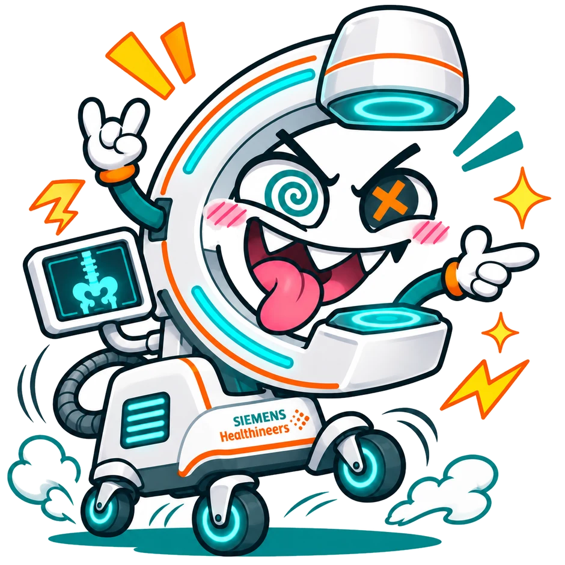
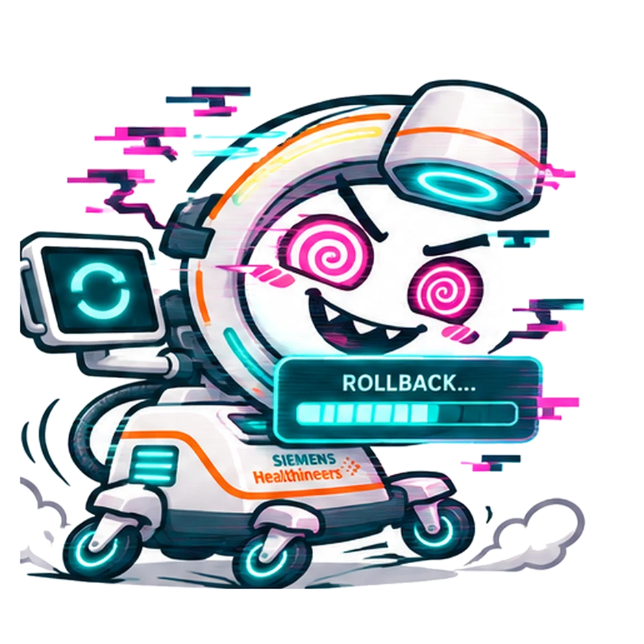

01 / CLINICAL CHAOSTEAMMATE 01THE OR INSIDER
C—A.HEALTHCARE HACKATHON 2026 / CHALLENGE 0401 / 14
01 / THE CHARACTERS ARE FUN. THE SIGNAL IS USEFUL.
MEET YOUR
TAMAGOTCHI.
A SMALL WINDOW INTO A VERY BIG SERVICE PROBLEM.
NOT ANOTHER CLINICAL TASK.
NOT ANOTHER CLINICAL TASK.
◉ 09:41 ●●● ▮
C—A.DEVICE CRM—041

NO CONTACT FOR 43 DAYS
“Have you forgotten about me?”
SYNTHETIC DEVICE · CONCEPT APP
THE DASHBOARD IS THE BRAIN.
THE APP IS JUST A VOICE.
THE APP IS JUST A VOICE.
02 / EMOTIONAL TELEMETRY — EXTREMELY SCIENTIFIC




01 / 06
GHOSTED BY
THE NETWORK.
“It's been 43 days since someone connected me.”
STATE / DISCONNECTED
THE PERSONALITY IS FICTIONAL. THE CONNECTIVITY PROBLEM IS NOT.
07 / THE MISSION — NO CLINICAL INTERRUPTION
SERVICE COMES
TO THE MACHINE.
PARKING BAY / MAINTENANCE-ELIGIBLE DEVICE
DEVICE CRM—041IDENTITY VERIFIED · AUTHORIZED
AWAITING AN APPROVED MISSION
01 / IDENTIFY
02 / DISPATCH
03 / AUTHENTICATE
04 / SYNCHRONIZE
05 / HANDOFF
PHYSICAL DOCKING & INTERFACES ARE A PROTOTYPE HYPOTHESIS, NOT A VERIFIED DEVICE CAPABILITY.